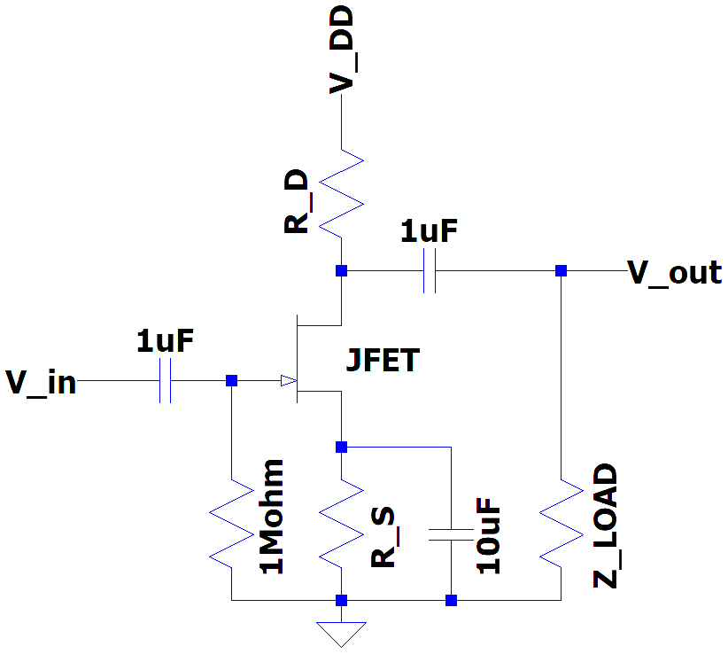

JFET transfer-characteristic, self-biasing and amplifying
(version 1.0)

Type of JFET:
Supply voltage
(V
DD
):
10
V
Ambient temperature
(T
AMB
):
26.85
°C
Gate-Source voltage
(V
GS
):
V
Drain current
(I
D
):
mA
Drain resistor
(R
D
):
Ω
Ω
E24
Source resistor
(R
S
):
Ω
Ω
E24
Type of Amplifier:
Common Source
Input impedance
(Z
in
):
1
MΩ
(fixed)
Output impedance
(Z
out
):
Ω
Load impedance
(Z
load
):
10
kΩ
Output eff. impedance
(Z
out-eff
):
Ω
Voltage GAIN
(A
v
):
Current GAIN
(A
i
):
Input voltage
(V
in
):
200
mV
peak
Output voltage
(V
out
):
mV
peak